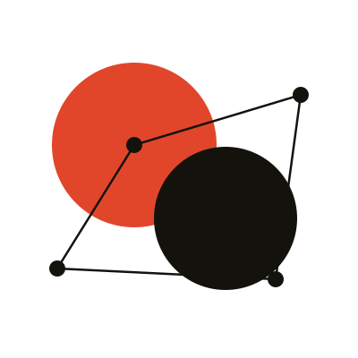
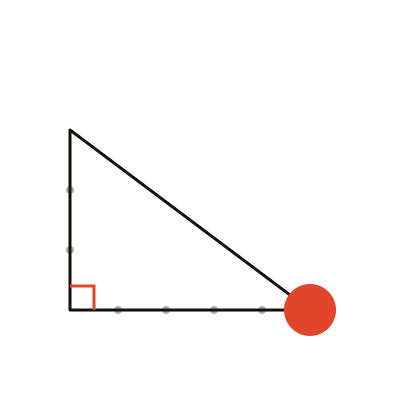
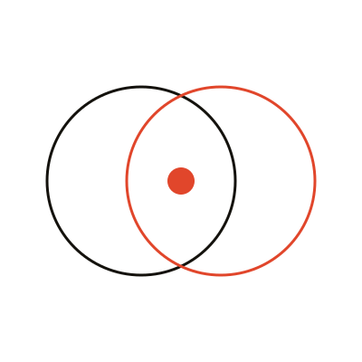
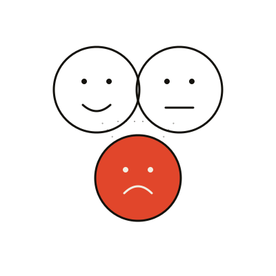
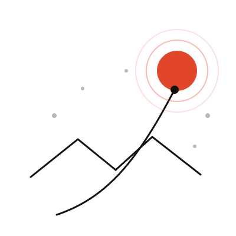

Works

阅读产品套件
WeRead Enhancer
让微信读书更好用

数学学习站
Math Classics
用公版古算书，讲看得懂的数学

公众号
WeChat Official Account
记录生活与思考
跑步训练看板
SLOW IS FAST
高驰 / 佳明数据，跑量、配速、强度一眼看清
饮品记录 H5
Milk Tea Log
拍一张照，收进按月归档的奶茶印章册
地图地点笔记
Map Notes
把地图收藏取出来，补一句备注，按「离我多远」排

行为风格测评
Work Persona
42 道题，看清自然 / 工作 / 压力三种状态下的自己

品牌官网
Xun Guang Jian Dao
循天光以明悟，践本心而成道
Contact ／ 合作
加微信说一句想做什么就行。先聊需求，再谈价格；不确定值不值得做也可以问，我直接告诉你。